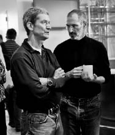

CEO
Bunca Yıldan Sonra Hâlâ Deli

Tim Cook’la Jobs, 2007
Tim Cook
Steve Jobs Apple’a geri dönüp de ilk senesinde “Farklı Düşün” reklamlarını ve iMac’i üretince, çoğu insanın zaten bildiği şey onaylanmış oldu: Yaratıcı ve vizyoner olabiliyordu. Bunu Apple’da ilk çalıştığı seferde göstermişti. Ama şirket yönetip yönetemeyeceği o kadar bariz değildi. Bunu ilk seferde göstermemişti.
Jobs’ın bu işe dört elle ve ayrıntılarda odaklanan bir gerçekçilikle sarılması, bu evrenin kanunlarına tabi olmak zorunda olmadığını hayal etmesine alışkın olan insanları hayrete düşürdü. “Müdür oldu, ki üst düzey yöneticilikten ve vizyonerlikten farklı bir şeydir; buna hem şaşırdım, hem de sevindim,” diye anımsıyordu, onu geri gelmeye ikna etmiş olan yönetim kurulu başkanı Ed Woolard.
Jobs’ın yönetim mantrası “odaklan”dı. Gereksiz ürün gruplarını ve Apple’ın geliştirdiği yeni işletim sistemi yazılımındaki lüzumsuz özellikleri iptal etti. Ürünleri kendi fabrikalarında imal etmek gibi, kontrol manyaklarına uygun bir arzudan vazgeçerek devre kartlarından tamamlanmış bilgisayarlara dek her şeyi dışarıya yaptırdı. Ve Apple’ın tedarikçilerini katı bir disipline soktu. Başa geçtiğinde Apple’ın depolarında iki aydan fazla yetecek kadar malzeme vardı, ki diğer teknoloji şirketlerine kıyasla çok fazlaydı bu. Yumurta ve süt gibi bilgisayarların da raf ömrü kısadır, dolayısıyla bu durum en az 500 milyon dolar zarar anlamına geliyordu. 1998’in başına gelindiğinde Jobs depolardaki malzemeleri bir aylığa kadar azaltmıştı.
Jobs’ın başarılarının bedeli vardı, çünkü tatlı dil diplomasisi hâlâ repertuvarının parçası değildi. Airborne Express’in bir şubesinin yedek parçaları yeterince hızlı teslim etmediğine karar verince, bir Apple müdürüne sözleşmeyi iptal etmesini emretti. Müdür kendilerine dava açılabileceğini söyleyince Jobs “Onlara söyle, bizimle uğraşırlarsa bir daha bu şirketten zırnık alamazlar,” diye karşılık verdi. Müdür istifa etti; dava açıldı ve sonuçlanması bir yıl sürdü. “Kalsam hisse senedi opsiyonlarımın değeri 10 milyon dolar olurdu,” dedi müdür, “ama o tavra katlanamayacağımı biliyordum – hem beni kovardı zaten.” Yeni distribütör, stoğu %75 azaltması söylenince bunu yaptı. “Steve’in başarısızlığa tahammülü sıfırdı,” dedi şirketin CEO’su. Başka bir zaman, VSLI Technologies şirketi yeterince çipi zamanında teslim etmekte zorlanmaya başlayınca Jobs bir toplantılarına daldı ve onların “Geri Zekâlı Piçler” olduklarını söylemeye başladı bağırarak. Şirket sonunda çipleri Apple’a zamanında teslim etti ve yöneticileri sırtında “GZP Ekibi” yazan ceketler yaptırdılar.
Apple’ın operasyon şefi, Jobs’ın emrinde üç ay çalıştıktan sonra baskıya dayanamayıp istifa etti. Jobs operasyonları neredeyse bir yıl boyunca bizzat yürüttü, çünkü iş görüşmesi yaptığı herkes “eski tarz imalatçılar gibi görünüyorlardı”. Jobs tıpkı Michael Dell gibi, tam zamanlı imalat yapacak fabrikalar ve tedarik zincirleri kurmak istiyordu. Derken 1998’de Tim Cook’la tanıştı; Compaq Computers’ta satın alma ve tedarik zinciri müdürü olarak çalışan, 37 yaşında, kibar biri olan Cook, Jobs’ın tek operasyon müdürü olmakla kalmayıp zamanla Apple’ın yönetiminde geri planda çalışan vazgeçilmez bir partnere dönüşecekti. Jobs’ın hatırladığına göre:
Tim Cook satın almada çalışmıştı ve bu iş tecrübesi tam da ihtiyacımız olan şeydi. İkimizin bakış açısının tamamen aynı olduğunu fark ettim. Ben Japonya’da tıkır tıkır işleyen bir sürü tam zamanlı fabrikayı gezmiştim ve Mac’le NeXT için bunlardan yaptırmıştım. Ne istediğimi biliyordum ve Tim’le tanışınca onun da aynı şeyi istediğini gördüm. Dolayısıyla birlikte çalışmaya başladık ve kısa sürede onun işi bildiğine güvenir oldum. Benimle aynı vizyona sahipti, stratejik düzeyde çok ileri bir iletişim kurabiliyorduk ve unuttuğum bir sürü şeyi gelip bana hatırlatıyordu.
Bir tersane işçisinin oğlu olan Cook Alabama’da, Mobile’la Pensacola’nın arasında, Gulf Coast’a yarım saatlik mesafedeki Robertsdale kasabasında büyümüştü. Auburn’da sanayi mühendisliği bölümünden mezun olmuş, Duke’tan işletme diploması almış ve sonraki on iki yıl boyunca IBM’de, Kuzey Carolina’daki Araştırma Üçgeni’nde çalışmıştı. Jobs onunla iş görüşmesi yaptığında Cook Compaq’ta çalışmaya yeni başlamıştı. Son derece mantıklı bir mühendis olmuştu hep ve o sıralar Compaq’ta çalışmak kariyeri açısından akıllıca görünmüştü, ama Jobs’ın aurasına kapıldı. “Steve’le görüşmeye başladıktan beş dakika sonra ihtiyata ve mantığa boşverip Apple’a katılmak istedim,” dedi sonradan. “Sezilerim öyle bir yaratıcı dahiyle çalışma fırsatını bir daha bulamayacağımı söylüyordu.” Dolayısıyla Apple’a katıldı. “Mühendislere analitik kararlar vermeleri öğretilir; ama bazen en doğrusu hislere, sezilere güvenmektir.”
Apple’daki rolü Jobs’ın sezilerini gerçeğe dökmekti ve bunu sessiz sedasız, çok çalışarak yaptı. Hiç evlenmemiş olduğundan kendini işine verdi. Çoğu günler sabahın dört buçuğunda kalkıp e-postalar gönderiyor, sonra spor salonunda bir saat geçiriyor ve altıyı biraz geçe masasında oluyordu. Pazar akşamları, gelecek haftanın konuşulacağı telefon toplantılarını ayarlıyordu. Sinir krizleri geçirmeye, bağırıp çağırmaya meyilli bir CEO tarafından yönetilen şirkette Cook olaylara soğukkanlıca hâkim oluyor, yatıştırıcı Alabama aksanıyla konuşuyor ve sessiz sessiz bakıyordu. “Cook eğlenceli olabilse de varsayılan yüz ifadesi çatık kaşlar ve çok espritüel biri değil,” diye yazdı Fortune’dan Adam Lashinsky. “Toplantılarda konuşurken uzun ve rahatsız edici duraksamalarda bulunmasıyla ve sürekli yediği enerji barlarının ambalajlarını hışır hışır açmasıyla tanınıyor.”
Cook şirkette yeniyken katıldığı bir toplantıda, Apple’ın Çinli tedarikçilerinden biriyle sorun yaşandığını öğrendi. “Bu gerçekten kötü,” dedi. “Birisi Çin’e gidip bu meseleyi halletmeli.” Yarım saat sonra, masada oturan bir operasyon müdürüne “Sen neden hâlâ buradasın?” diye sordu duygusuzca. Müdür kalkıp, bavullarını bile hazırlamadan dosdoğru San Francisco havaalanına gitti ve Çin’e bilet aldı. Cook’un baş yardımcılarından biri oldu.
Cook, Apple’ın başlıca tedarikçilerinin sayısını yüzden yirmi dörde indirdi, onları indirim yapmaya zorladı, çoğunu Apple fabrikalarının civarına taşınmaya ikna etti ve şirketin on dokuz deposundan on tanesini kapattı. Malların yığılabileceği yerleri azaltmakla stokları da azalttı. Jobs 1998’in başında, iki aylık stokları bir aylığa indirmişti. O senenin Eylül’üne gelindiğindeyse Cook stokları altı günlüğe indirmişti. Ertesi Eylül’de, artık sadece iki günlük stok tutuluyordu şaşırtıcı bir şekilde – hatta bu süre bazen 15 saate kadar iniyordu. Ayrıca Apple bilgisayarlarının imalat süresini dört aydan iki aya indirdi. Bütün bunlar tasarruf ettirmekle kalmayıp, her yeni bilgisayarın en son donanım ürünlerine sahip olmasını sağladı.
Yarı Boğazlı Kazak ve Ekip Çalışması
Jobs 1980’lerin başlarında yaptığı bir Japonya gezisinde, Sony’nin başkanı Akio Morita’ya neden şirketteki herkesin üniforma giydiğini sordu. “Çok utanmış gibiydi; bana savaştan sonra kimsenin giysisi olmadığını ve Sony gibi şirketlerin işçilerine her gün giyecek bir şeyler vermek zorunda kaldıklarını söyledi,” diye anımsıyordu Jobs. Yıllar geçtikçe üniformalara, özellikle de Sony’ninkilere onlara özgü özellikler eklendi ve böylece işçilerin şirketle kaynaşmaları sağlandı. “Apple’da öyle bir kaynaşma istediğime karar verdim,” diye anımsıyordu Jobs.
Stile önem veren Sony, üniformasını ünlü tasarımcı Issey Miyake’ye tasarlatmıştı. Üniformanın naylon ceketinin kolları fermuarlıydı ve onlar çıkarılınca yeleğe dönüşüyordu. “Issey Miyake’yi aradım ve Apple’a bir yelek tasarlamasını istedim,” diye anımsıyordu Jobs. “Bazı numunelerle geri döndüm ve herkese bu yelekleri giymemizin harika olacağını söyledim. Sahnede yuhalandım resmen. Herkes bu fikirden nefret etti.”
Ama bu süreçte Miyake’yle arkadaş oldu ve onu düzenli olarak ziyaret etmeye başladı. Kendine bir üniforma yaptırmayı da düşünmeye başlamıştı, hem gündelik hayatta rahat olacağı için (öne sürdüğü sebep buydu), hem de kendine özgü bir tarzı olacağından. “Dolayısıyla Issey’e beğendiğim siyah boğazlı kazaklarından yapmasını istedim ve yüz tane filan yaptı.” Jobs bu öyküyü duyunca şaşırdığımı fark edip, dolabında istiflenmiş kazakları gösterdi. “İşte bunları giyiyorum,” dedi. “Ömür boyu yetecek kadar var.”
Jobs otokratik mizacına karşın –konsensüse tapanlardan değildi o–, Apple’da işbirliği kültürünü geliştirmek için çok çalışıyordu. Birçok şirket, çok az toplantı düzenlemekle gurur duyar. Jobs ise birçok toplantı düzenliyordu: her Pazartesi yönetici kadro toplantısı, her Çarşamba ikindisi pazarlama stratejisi toplantısı, ayrıca sonu gelmez ürün değerlendirme toplantıları. PowerPoint’ten ve resmi sunumlardan hâlâ hazzetmediğinden, masada oturan insanların meseleleri kendi bölümlerinin açısından anlatmalarında diretiyordu.
Apple’ın en büyük avantajının eksiksiz, entegre –tasarımdan donanıma, yazılımdan içeriğe dek– cihazlar sunması olduğuna inandığından, şirketin bütün bölümlerinin birbirleriyle paralel çalışmalarını istiyordu. “Derin işbirliği” ve “eşzamanlı mühendislik” terimlerini kullanıyordu. Ürünün sırayla mühendislikten tasarıma, imalattan pazarlamaya geçtiği bir geliştirme süreci yerine, bu çeşitli bölümler ürünün üstünde birlikte ve eşzamanlı çalışıyorlardı. “Yöntemimiz entegre ürünler geliştirmekti ve bu, sürecimizin entegre ve işbirlikçi olmasını gerektiriyordu,” dedi Jobs.
Bu yaklaşım önemli konumlar için yapılan personel alımlarında da geçerliydi. Adayları sadece çalışmak istedikleri bölümün müdürleriyle değil, üst düzey yöneticilerle –Cook, Tevanian, Schiller, Rubinstein, Ive– tanıştırıyordu. “Sonra o kişi olmadan toplanıyorduk ve bize uyup uymayacağını konuşuyorduk,” dedi Jobs. Amacı bir şirketin ikinci sınıf yetenekler yüzünden verimsizleşmesine yol açan “andaval patlamasına” karşı tetikte olmaktı:
Hayattaki çoğu şeyde, en iyiyle vasatın arasındaki fark %30 civarıdır. En iyi uçak şirketleri, en güzel yemekler vasatlardan %30 daha iyi olabilirler. Woz’unsa vasat bir mühendisten elli kat daha iyi olduğunu görmüştüm. Kendi kafasında toplantılar düzenleyebiliyordu. Mac ekibi, tamamı öyle A ligi oyuncularından oluşma bir ekip kurma girişimiydi. İnsanlar onların birbirleriyle geçinemeyeceklerini, birbirleriyle çalışmaktan nefret edeceklerini söylüyorlardı. Ama ben A ligi oyuncularının A ligi oyuncularıyla çalışmaktan hoşlandıklarını, C ligi oyuncularla çalışmaktansa hazzetmediklerini fark etmiştim. Pixar şirketindeki herkes A ligi oyuncusuydu. Apple’a geri dönünce bunu yapmaya çalışmaya karar verdim. İşe alma sürecinde işbirlikçi olmanız gerekiyor. Birini işe alacağımız zaman, pazarlama bölümünde çalışacak bile olsa, onu tasarımcılarla ve mühendislerle konuştururum. Rol modelim Robert Oppenheimer’dı. Atom bombası projesi için nasıl insanlar aradığını okudum. Ben kesinlikle onun kadar iyi olmasam da, hedefim öyle olmaktı.
Bu süreç zorlu olabiliyordu, ama Jobs yetenekli insanları tanımayı iyi biliyordu. Apple’ın yeni işletim sisteminin grafik arayüzünü tasarlayacak insanlar aradıkları sırada, Jobs kendisine e-posta gönderen genç bir adamı görüşmeye davet etti. Görüşmeler iyi geçmedi. Aday gergindi. Jobs o gün daha sonra onunla karşılaştığında, aday lobide perişan halde oturmaktaydı. Jobs’a fikirlerinden birini göstermek istediğini söyledi ve Jobs başını geriye çevirip bakınca, Adobe Director’la hazırlanmış kısa bir demo gördü; bu demoda dock çubuğuna daha fazla ikon sığdırmanın bir yolu gösteriliyordu. Adam imleci docka sıkıştırılmış ikonların üstünde gezdirince, imleç büyüteç gibi davranıyor ve her ikonu büyütüyordu. “Tanrı’m dedim ve onu hemen işe aldım,” diye anımsıyordu Jobs. Bu özellik Mac OS X’in sevilen bir parçası haline geldi ve tasarımcı daha sonra çoklu dokunmatik ekranlar için ataletli kaydırma (parmağınızı sürtmeyi kesmenizden sonra sayfanın biraz daha kaymasını sağlayan nefis özellik) gibi şeyler tasarladı.
Jobs NeXT’teki deneyimleri sayesinde olgunlaşmıştı, ama pek yumuşamamıştı. Mercedes’i hâlâ plakasızdı ve arabasını hâlâ ön kapının yanındaki engelli yerlerine, bazen iki arabalık yere park ediyordu. Bu huyu espri konusu haline geldi. Çalışanlar “Farklı Park Et” yazılı tabelalar yaptılar ve birisi engellilerin tekerlekli araba sembolünü boyayla Mercedes logosu haline getirdi.
Jobs çoğu toplantının sonunda, uyulacak bir kararını ya da stratejisini her zamanki gibi kısaca açıklıyordu. “Muhteşem bir fikrim var,” diyordu, bu fikri daha önce başkası önermiş olsa bile. Veya “Bu berbat. Yapmak istemiyorum,” diyordu. Bazense, bir meseleyle yüzleşmeye hazır değilse, onu bir süreliğine görmezden geliyordu.
İnsanlar ona karşı çıkmakta serbesttiler, hatta buna teşvik ediliyorlardı ve Jobs’ın kendisine karşı çıkanlara saygı duyduğu oluyordu bazen. Ama fikirlerinizi değerlendirirken size saldırmasına, hatta ezmesine hazırlıklı olmalıydınız. “Onunla tartışırken kazanman mümkün değil, ama bazen sonradan kazandığın olur,” dedi James Vincent, Lee Clow’la çalışmış olan yaratıcı genç reklamcı. “Bazen bir şey önerirsin, ‘Bu salakça bir fikir,’ der, sonra da geri gelip ‘Yapacağımız şey şu,’ der. ‘Ben bunu iki hafta önce sana söylemiştim ve salakça bir fikir demiştin,’ demek istersin. Ama diyemezsin. ‘Harika bir fikir, hadi yapalım,’ dersin.”
İnsanlar Jobs’ın arada sırada söylediği mantıksız ya da yanlış fikirlere de katlanmak zorunda kalıyorlardı. Hem ailesine hem de iş arkadaşlarına, gerçeklikle pek ilgisi olmayan bazı bilimsel veya tarihsel “gerçekleri” gayet kendinden emin bir şekilde söylemeye meyilliydi. “Bir konuda hiçbir şey bilmese bile, çılgın tarzı ve mutlak özgüveni sayesinde insanları o konuyu bildiğine ikna edebiliyor,” dedi Ive; bu özelliği sevimli buluyordu tuhaf bir şekilde. Lee Clow, Jobs’a bir reklam kesitini gösterdiğini, Jobs’ın istediği birkaç küçük değişikliği yaptığını ve sonra Jobs’ın kendisine saldırdığını, reklamın tamamen mahvolduğunu söylediğini anımsıyor. Clow bunun üzerine ona yanıldığını kanıtlamak için eski versiyonları gösterdi. Ama ayrıntıları kolay fark edebilen Jobs, başkalarının gözden kaçırdığı ufak tefek şeyleri yakalıyordu bazen. “Bir keresinde fazladan iki kareyi çıkarmışız ve bunun fark edilmesi neredeyse imkânsızdı,” dedi Clow. “Ama Jobs görüntünün müzikle tam uyum içinde olmasını istiyordu ve kesinlikle haklıydı.”
Emprezaryo
iMac tanıtım etkinliğinin başarısından sonra Jobs yılda dört beş kez, dramatik ürün tanıtımlarının ve sunumlarının koreografisini hazırlamaya başladı. Bu sanat formunda ustalaştı ve hiçbir şirket liderinin onunla boy ölçüşmeye kalkışmadı bile. “Jobs’ın sunumları seyircilerinin beyinlerine dopamin hücum etmesine yol açıyor,” diye yazdı Carmine Gallo, Steve Jobs’ın Sunum Sırları kitabında.
Dramatik ürün tanıtımları yapma arzusu, Jobs’ın bir şeyleri ilan etmeye hazır hale gelene dek gizli tutma saplantısını körükledi. Hatta Apple, Nicholas Ciarelli adlı Mac tutkunu bir Harvard öğrencisinin piyasaya sürülecek Apple ürünleriyle ilgili güzel bloğu “Gizli Düşün”ü kapattırmak için mahkemeye başvurdu. Böyle eylemler (bir başka örnekse Apple’ın 2010’da, iPhone 4’ü piyasaya sürülmesinden önce eline geçiren Gizmodo’ya savaş açmasıydı) eleştirilere yol açsalar da, Jobs’ın ürün tanıtımlarının bazen histerik denebilecek kadar merakla beklenmesine katkıda bulundular.
Jobs’ın ürün şovları özenle hazırlanıyordu. Sahneye üstünde kot pantolon ve boğazlı kazakla, elinde bir şişe su tutarak, salına salına giriyordu. Seyircilerin çoğu hayranlar oluyordu ve etkinlikler şirket ürün anonslarından çok dinsel cemaat toplantılarını andırıyordu. Muhabirler ortada bir yere oturtuluyordu. Jobs slaytlarını ve konuşmalarını bizzat hazırlıyor, defalarca kontrol ediyor, arkadaşlarına gösteriyor ve iş arkadaşlarıyla onlar hakkında konuşuyordu. “Her slaydı yedi sekiz kere değiştiriyor,” dedi karısı Laurene. “Her sunumdan önceki gece onunla birlikte sabaha kadar oturuyorum ve prova yapıyor.” Jobs ona bir slaydın üç varyasyonunu gösteriyordu ve en iyisini seçmesini istiyordu. “Öyle takıntılı oluyor ki. Konuşmasını gözden geçiriyor, bir iki sözcüğü değiştiriyor ve sonra tekrar baştan okumaya başlıyor.”
Sunumlar tıpkı Apple ürünleri gibi görünüşte sadeydiler –neredeyse bomboş bir sahne, birkaç sahne donanımı–, ama altta gerçek bir derinlik yatıyordu. Bir Apple ürün mühendisi olan Mike Evangelist iDVD yazılımı üstünde çalıştı ve Jobs’ın bu ürünü tanıtmaya hazırlanmasına yardımcı oldu. O ve ekibi şovdan haftalar öncesinden başlayarak, Jobs’ın sahnedeyken DVD’ye yazdırabileceği resimleri, şarkıları ve fotoğrafları yüzlerce saat boyunca aradılar. “Apple’daki tanıdığımız herkese en iyi ev filmlerini ve şipşak fotoğraflarını getirmelerini söyledik,” diye anımsıyordu Evangelist. “Mükemmeliyetçiliğinden taviz vermeyen Steve çoğundan nefret etti.” Evangelist Jobs’ın mantıksız davrandığını düşünse de, onları hep daha iyiyi aramaya sevk etmesinin sonunda örneklemeyi daha iyi kıldığını kabul etti.
Jobs ertesi sene Evangelist’e, video editleme yazılımı Final Cut Pro’nun tanıtımında kendisiyle birlikte sahneye çıkmasını söyledi. Provalar sırasında, Jobs oditoryumun ortasındaki bir koltuktan seyrederken, Evangelist gerildi. Jobs insanları ellerinden tutup destek veren türden biri değildi. Bir dakika sonra onu durdurup sabırsızca “Bu işi becermelisin, yoksa her şeyi baştan hazırlamamız gerekecek,” dedi. Phil Schiller, Evangelist’i kenara çekti ve ona daha sakin görünmenin tüyolarını verdi. Evangelist bir sonraki provayı ve sonra seyircilerin karşısındaki gösteriyi başarıyla atlattı. Sadece gösterinin sonunda Jobs’tan aldığı övgüyü değil, Jobs’ın prova sırasındaki sert sözlerini de hâlâ değerli bulduğunu söyledi. “Beni daha çok çalışmaya zorladı ve böylece kendimi epey aştım,” diye anımsıyordu. “Steve Jobs’ın Apple’a olan etkisinin en önemli yönlerinden biri bu bence. Kendinde ve başkalarında mükemmellikten daha azına tahammülü çok az, belki de hiç yok.”
iCEO’luktan CEO’luğa
Jobs’ın Apple yönetim kurulundaki akıl hocası Ed Woolard onun CEO ünvanının başındaki “geçici” kısmını atması için iki seneden fazladır baskı yapıyordu. Jobs şirkete tamamen bağlanmayı reddetmekle kalmayıp, hisse senedi opsiyonu almayarak ve yılda sadece 1 dolara çalışarak herkesi şaşırtıyordu. “Sırf işe geldiğim için 50 sent alıyorum,” diye espri yapmaktan hoşlanıyordu, “diğer 50 senti de performansıma karşılık alıyorum.” Temmuz 1997’de geri döndüğünde 14 doların biraz altında olan hisse fiyatı, 2000’in başındaki internet balonunun doruğunda 102 doların biraz üstüne çıkmıştı. Woolard 1997’de, kendisine az sayıda da olsa hisse bağışlanmasını kabul etmesi için yalvarmıştı; ama Jobs “Apple’da birlikte çalıştığım insanların zengin olmak için geri döndüğümü düşünmelerini istemiyorum,” diyerek reddetmişti. Kabul etse, kendisine bağışlanacak hisselerin değeri 400 milyon dolara çıkacaktı. Oysa o süre içinde 2,5 dolar kazanmıştı.
Ünvanındaki geçici ibaresinden vazgeçmemesinin temel sebebi Apple’ın geleceğinden emin olmamasıydı. Ama 2000 yılı yaklaştıkça, Apple’ın onun sayesinde toparlandığı anlaşıldı. Karısı Laurene’le uzun bir yürüyüşe çıktı ve artık çoğu insana formalite gibi gelen, ama onun için hâlâ çok önemli olan meseleyi konuştu. Geçici ibaresinden vazgeçerse, Apple hayal ettiği her şeyin temeli olabilirdi; örneğin Apple’ı bilgisayarlardan başka ürünlere de yöneltebilirdi. Bunu yapmaya karar verdi.
Woolard çok sevindi ve yönetim kurulunun ona büyük bir hisse bağışında bulunmaya hazır olduğunu söyledi. “Seninle açık konuşayım,” diye karşılık verdi Jobs. “Bir uçağı yeğlerim. Üçüncü çocuğum yeni doğdu. Yolcu uçaklarını sevmiyorum. Ailemi Hawaii’ye götürmekten hoşlanıyorum. Doğuya giderken pilotlar tanıdık olsun isterim.” Jobs TSA’dan[31] önce bile yolcu uçaklarında, hatta terminallerde kibar ve sabırlı davranabilen biri olmamıştı. Jobs’ın bazen uçağını kullandığı yönetim kurulu üyesi Larry Ellison (Apple 1999’da Ellison’a bu yüzden 102.000 dolar ödemişti) itiraz etmedi. “Başardıklarını göz önüne alınca ona beş uçak vermeliyiz!” dedi Ellison. Sonradan da şöyle dedi: “Apple’ı karşılıksız kurtaran Steve’e mükemmel bir teşekkür hediyesiydi.”
Woolard, Jobs’ın isteğini seve seve yerine getirdi –bir Gulfstream V ile– ve ayrıca ona on dört milyon hisse senedi opsiyonu önerdi. Jobs beklenmedik bir karşılık verdi. Daha fazlasını istiyordu: yirmi milyon opsiyon. Woolard afalladı ve sinirlendi. Yönetim kurulu hissedarlardan sadece on dört milyon opsiyon dağıtma yetkisi almıştı. “Opsiyon istemediğini söylemiştin; uçak istediğini söylemiştin ve sana uçak verdik,” dedi Woolard.
“Daha önce opsiyonlarda ısrar etmemiştim,” diye karşılık verdi Jobs, “ama sen şirketin hisselerinin %5’e kadarının opsiyonunu verebileceğini söylemiştin ve şimdi bunu istiyorum.” Kutlama yapılması gereken bir zamanda bu tartışmanın yapılması rahatsız ediciydi. Sonunda karmaşık bir çözüm bulundu (Haziran 2000’de hisselerin 1’e 2 bölünmesinin planlanması durumu biraz daha karmaşıklaştırdı): Ocak 2000’de Jobs’a 10 milyon hisse bağışlandı; bunların değeri şimdiki fiyattan değil, 1997’de bağışlanmışlar gibi hesaplandı ve 2001’de bir bağış daha yapılmasına karar verildi. İnternet balonunun patlamasıyla birlikte hisse değerinin düşmesi üzerine Jobs’ın opsiyonlarını kullanmaması ve 2001’in sonunda yönetim kurulundan bunların yerine kendisine daha düşük işlem fiyatından yeni bir bağış yapmalarını istemesi durumu iyice kötüleştirdi. Opsiyonlar çekişmesi sonradan şirketin başına bela olacaktı.
Jobs opsiyonlardan kâr etmese de uçağa bayıldı. İç tasarımına epey kafa yorması şaşırtıcı değildi. Uçağın içini istediği gibi yapması bir yıldan fazla sürdü. Ellison’ın uçağını başlangıç noktası olarak kullanıp bir tasarımcı tuttu. Kısa süre sonra kadını çileden çıkarmaya başladı. Örneğin Ellison’ın G-5’inde, kabinlerin arasında açma ve kapama düğmeleri bulunan bir kapı vardı. Jobs kendi kapısının tek bir açma kapama düğmesi olmasında diretti. Cilalı paslanmaz çelik düğmeleri beğenmediğinden, onları fırçalanmış metal düğmelerle değiştirtti. Ama sonunda istediği uçağa sahip oldu ve ona bayıldı. “Onun uçağıyla kendiminkini karşılaştırıyorum da, yaptığı her değişiklik iyiydi,” dedi Ellison.
Jobs Ocak 2000’de San Francisco’da düzenlenen Macworld’de yeni Macintosh işletim sistemi OS X’i tanıttı; bu sistemde Apple’ın üç yıl önce NeXT’ten satın aldığı yazılımlardan bazıları kullanılıyordu. Jobs’ın tam NeXT OS’nin Apple’ın işletim sistemiyle kaynaştırıldığı sırada Apple’a tamamen geri dönmeye razı olması uygundu ve tamamen rastlantısal değildi. Avie Tevanian NeXT işletim sisteminin UNIX bağlantılı Mach kernelini alıp, Darwin adıyla bilinen MAC OS kerneline dönüştürmüştü. Darwin korumalı bellek, gelişkin ağ kurma ve öncelikli çoklu görev özelliklerini sunuyordu. Tam Macintosh’un gereksindiği şeydi bu ve şimdiden sonra Mac OS’nin temeli olacaktı. Aralarında Gates’in de bulunduğu bazı tenkitçiler Apple’ın NeXT işletim sistemini tamamen benimsemediğini belirttiler. Bunda doğruluk payı vardı, çünkü Apple yepyeni bir sisteme geçmek yerine ellerindeki sistemi geliştirmeyi yeğlemişti. Eski Macintosh sistemi için yazılan uygulama yazılımları genelde yeni sistemle uyumluydular veya uyumlandırılmaları kolaydı; ayrıca yeni sisteme geçen Mac kullanıcıları birçok yeni özelliği fark edecek, ama yepyeni bir arayüzle karşılaşmayacaklardı.
Macworld’deki hayranlar haberi sevinçle karşıladılar elbette; özellikle de Jobs ‘dock’u ve üstündeki ikonların üzerlerinden imleç geçirilerek büyütülebildiğini gösterdiğinde, tezahüratlarla yeri göğü inlettiler. Ama en büyük alkış her zamanki gibi “Ah, bir şey daha...” dediğinde koptu. Pixar’daki ve Apple’daki görevlerinden bahsetti ve iki yerde birden çalışmaya alıştığını söyledi. “Dolayısıyla bugün geçici ibaresinden vazgeçtiğimi memnuniyetle açıklıyorum,” dedi geniş bir gülümsemeyle. Kalabalıktakiler sanki The Beatles tekrar bir araya gelmiş gibi çığlık çığlığa ayağa fırladılar. Jobs dudağını ısırdı, tel çerçeveli gözlüğünü düzeltti ve mütevazı rolü yaptı kibarca. “Bana kendimi tuhaf hissettiriyorsunuz şimdi. Ben her gün işe gidip de gezegendeki en yetenekli insanlarla, Apple’daki ve Pixar’daki insanlarla birlikte çalışma fırsatını yakalıyorum. Ama bu işler takım sporudur. Teşekkürlerinizi Apple’daki herkes adına kabul ediyorum.”